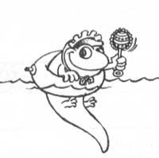
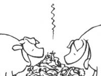
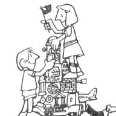

School will soon be out for the summer in most places, and now's the perfect time to pick up a free supply of children's clothing. Pearl Zank visits her neighborhood elementary school every spring and requests all the unclaimed garments from the lost-and-found department. The "orphans" usually include sweaters, jackets, caps, mittens, boots, and more (Pearl has all the items thoroughly cleaned before using them) . . . and the Rushland, Pennsylvania reader reports that she's kept her youngest child well dressed for six years by using this method.
"No matter how many times I tried to encourage frogs to homestead under flowerpots or boards in my garden, the hoppers all moved away," Sylvia Lucas wrote from Montevallo, Alabama. "I finally solved that problem, however, by raising my own frogs. I took a child's wading pool . . . covered the bottom with soil, rocks, and a board or two . . . and adopted some tadpoles from a nearby stream. My children were fascinated by watching the wigglers turn into tiny frogs, and many of the critters stayed around to keep my garden pests under control (and raise another generation of frogs)."
To keep varmints out of the roof rafters of your barn or chicken coop, just run a wire along the center of each joist, two or three inches above the wood. Then the animals won't be able to walk on the beams . . . according to Richard Anderson of Port Angeles, Washington.
Having been out of the "baby needs" market for over eight years, Jim and Donna Carmean were shocked-when shopping in preparation for the arrival of their third child-to discover how expensive infant items had become. Small flannel receiving blankets, for instance, were priced at $6.00 apiece. Well, Donna found a way around that expense by cutting one standard-sized flannel sheet into four equal sections. She crocheted a finished edge around all four sides of each quarter (if you don't crochet, try simply sewing a blanket stitch border), and then attached a small animal appliqué in one corner. Since the Grayling, Michigan resident paid only $8.00 for the sheet, she got four extra-large baby blankets at $2.00 each ... or one-third the price of the ready-made variety.
If your garden needs lime (and most do), Steve Morse of Columbia, Kentucky knows a way to get some inexpensively. Instead of purchasing bags of the soil nutrient, Steve takes a trash can to a nearby quarry and shovels his own. The going rate for such lime is about $4.00 a ton . . . but Steve says the fellow at the gate lets him take his "puny" canful for free! [ EDITOR'S NOTE: Be sure to test your soil before spreading the lime . . . and to add the substance gradually, being careful not to overcompensate for a small pH imbalance. ]
Using 16-penny nails as stakes for new seedlings (especially tomato and eggplant) will prevent cutworms from attacking the tender young stalks, says Wil Edwards of Jackson, Tennessee. As the plants grow taller and stronger, wooden stakes can be used to replace the nails.
Electric brooms and sweepers can generally be purchased secondhand at great savings, but often the used appliances won't include the variety of attachments that accompany brand-new models. Well, Mary Ann Hilgren-who hails from Oquawka, Illinois-has a tip for those of you in such a predicament. She saves the cardboard centers from toilet tissue and paper towels and makes a slit, an inch or two long, on one end of each roll. Then she overlaps the edges (adapting the opening to match the size of her cleaner's hose nozzle) and seals the tube to the nozzle with tape. The unsealed end can then be molded or bent to reach almost any "impossible" corner or crevice!
Here's a household tip that'll help you do two tasks at once. St. Johns, Michigan reader Kathy Tyler washes her bathtub out with a household mop! By sprinkling the still-damp tub with cleanser after bathing and then scrubbing it with the long-handled cleaning utensil, Kathy gets both the tub and the mop clean . . . and saves her back from unnecessary bending.
When thinning out her strawberry patch, Brenda Hartley partially buries paper cups, three-quarters full of soil, near the ends of new runners. Then she pushes one of the plant-forming "vines" into each cup, waters them all, and allows them to rest for a week or so while they set roots. After that, the Danville, Illinois reader simply clips the runners and carries the cups to new locations. Once there, the paper containers can be easily removed without disturbing the plants . . . and her strawberry patch stays orderly and keeps on expanding!
"For the past few years our family has been eating, preserving, and feeding our livestock free fruits and vegetables!" writes Mrs. Steve Horn from Chase, Kansas. "Every time we go grocery shopping in town, you see, we ask the retailers for their vegetable clippings and throwaways. In our area such produce is free for the hauling. Better yet, nearly every case of outer lettuce leaves, for example, also contains several perfectly good heads . Our animals enjoy the loose trimmings, and our family relishes the free salad fixings. Furthermore, occasionally the stores will have certain vegetables on 'special', and when the sales are over we may 'inherit' such usually expensive foods as cauliflower, tomatoes, and peppers. Again, our livestock can feast on any of the fruits and vegetables that are heavily damaged, and I preserve the 'passable' fare for future dinners!"
After spending good money-one too many times-on plastic siphon kits that proved useless, Daniel Owczarzak discovered a "foolproof" method of siphoning gasoline. The Elmo, New Yorker takes a hose and a used or outdated automotive fuel pump-easily found at flea markets for a modest sum-and slips one end of the hose into the gas tank. He then attaches the other end to the pump's inlet tube. By sliding a small pipe onto the device's shaft and pumping it once or twice, he soon has gasoline gushing from the outlet tube. When this occurs, Dan simply removes the hose and installs his to-be-filled container!
Don't throw out those broken toys! Tina Chappell-a Tarheeler from Tyner, North Carolina-suggests completely disassembling the battered amusements and packing the pieces away. Then, when rainy weather dictates indoor activity, Tina gives her youngsters the box of parts-along with plenty of glue-and lets them "invent" their own playthings.
B.J. VanDerBerg passed on this tip about hustling up crickets for his fishing expeditions. The Elkhart, Indiana angler spreads out a piece of plastic- about two feet square-on the ground near the water. He sprinkles a half-cup of sugar on the plastic . . . and covers the lure with doubled-up damp newspaper. In the morning the Hoosier simply picks up the plastic and dumps all the crickets-and there should be plenty!-into his bait bucket.
Are you ready to replace your old lawn furniture with a new set? If so, here's a suggestion on how to get more use out of a time-worn chair. Donna Camp-Schuster recommends cutting away the webbing and letting the frame serve as a sack holder for leaves and garden rubbish! The Santa Cruz, Californian just places a plastic trash bag through the seat portion and folds the top over the arms and back of the chair.
Don't throw away the frayed webbing that you remove, either! Mel Bauman of Springwater, New York protects his young fruit trees from wildlife nibblers by wrapping the strips around the base of each tree. The web's open weave allows the tree to breathe and doesn't collect moisture, and the material stands up to weather really well!
You can protect your orchard from unwanted pests by wrapping tree trunks with old-fashioned flypaper strips, too. Kimbolton, Ohio's Rose Steward wrote to say that she stopped an invasion of tent caterpillars by this method . . . and Walter Garrison of Kuna, Idaho guarantees it'll halt ants and earwigs-or any other creepy-crawlers-in their tracks, as well. Sunshine seems to keep the strips extra sticky . . . and since the substance is nontoxic, it won't harm pets.
To keep rabbits, groundhogs, raccoons, and other four-legged nuisances out of your garden this season, take a tip from John Pitts of Orillia, Ontario. In the early spring he puts several carpet scraps on the front porch for the family pets to lie on. Then, when his garden begins growing, the Canadian transfers those odoriferous rugs to the borders of his vegetable plot and puts new carpet pieces on the porch. The "doggie" scent repels unwanted guests from the garden . . . and, by continually swapping scraps from porch to plot, John is able to protect his crops all summer long!
Frances dark of Nashville, Tennessee sent us a postcard chock- full of good ideas. Since space doesn't allow us to print them all (we try to let as many of our readers as possible "speak" in this column), here are two of her best tips: Frances reports that cheese will be easier to grate if first placed in the freezer for ten minutes, and she also recommends tying a string of bells around the doorknob of your child's bedroom ... to alert you when the youngster gets up during the night.
Nancy Crawford enjoys macramé, and she likes to make outdoor hangings to hold plants and bird feeders in her Mattoon, Illinois yard. But Nancy recently discovered, to her dismay, that squirrels were shredding the "tails" off her hangings to use as nesting material. To prevent the destruction, Ms. Crawford tied large knots at the ends of her macramé art . . . and soon began to feel guilty as she watched her furry friends laboriously (and unsuccessfully) trying to steal more fibers. So now, Nancy just ties all her leftover pieces of jute outside, and watches with pleasure as both squirrels and birds pluck strands for their nests.
Finally, here's a bit of lore of a different sort, donated by Priscilla Cook of Mountain Home, Idaho. "For good health, avoid these exercises: carrying grudges . . . flying into a rage . . . stretching the truth . . . jumping to conclusions . . . digging up old scandals . . . going on wild goose chases . . . patting yourself on the back . . . and raking people over the coals."
Through the years we've all probably discovered a few practical, down-home, time-tested solutions to the frustrating little problems of everyday life. Why not share your best "horse sense" with the rest of MOTHER'S readers? Send your suggestions to Down-Home Country Lore, P.O. Box 70, Hender-sonville, North Carolina 28791. A one-year subscription-or a one-year extension of an existing subscription-will then be sent to each contributor whose tip is printed in this column- MOTHER.
|
 |
 |
 |